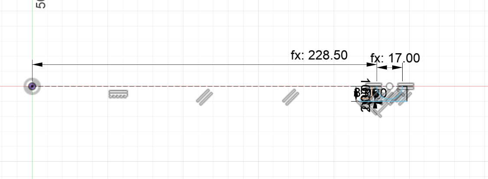

Inspired by the buzzers I saw in the class, I wanted to a project wehre the buzzer start's beeping after some values of a sensor that the beep intensifies as
the value increases. I first though of using my tilt sensor but since it had water in it, I may spill it of and decided not to. Instead I deicded to use a ultrasonic sensor.
I first wrote my code with delays and recorded some demo's and oscilescope readings while the delay was in the code. Today I changed the code for the buzzer to not have
delay and it worked as fine as before.
In real life whenc ars are parking, and the car get's close to a object a beep sound starts in the car. In my project this week I wanted to achieve. To start of
I attached a buzzer and potentio-meter to see the range of sound I can get fromn the buzzer and found a voice that matches what I wanted. I playe with it and settled on
800hz as it matched the sound I wanted. After that I thought about how can I make the beep's of the car, the closer you get the faster it beeped and the farther you're the less
frequent it beeped. To achieve this I thought of a fixed time of HIGH and a variable time of LOW. I also thought that if the distance was far awaw the buzzer shouldn't beep.
I decided that the buzzer would pause for 1.5*times of the HIGH time around 50cm distance and 0MS whent he object was closer than 2.5cm. The ultrasonic sensor started to give
extreme values for values closer than 2.5cm and I decided to cut that. Here is a video that demenstroate my project, after ı removed delays
Also sometimes the ultrasonic sensor randomly detecrts that are not infront of it. To fix this I probably have to implement some algorithm that keeps track of last 10-20 reads
and compares how extreme the result is to the other data. When I open the serial plotter I can definetely see some spikes.
The way my code works is that I get a reading from the distance sensor, check wheather it's less than 50 or not. If it's less than 50 tell the buzzer to beep for a second pause
for a second and repeat with the next reading. Since I avoided using delay the code doesn't like this but instead I update the information on the buzzer whenever I get a reading below 50cm.
and on everyloop iteration regardsless of the update I tell it to beep(the beep functions has logic to decide when to beep and hen no to).
To not deal with random values from the sensor I set minumum value of the sensor to be 2.5(if it's less than that I make it 2.5). My code takes the value from a raneg of
2.5 to 50 and converts it to a range of 0.01 to 1.5. For this I copied the code for the map function amd made everything double. Here's the code for it.
On my code what with delay I did was that I multiplied the number beetween 0 to 1.5 with the beep_duration which gave the duration to pause(noo beeping). The ultrasonic sensor
sends data really fast and I should have a way to update my buzzer withput having no pauses. My solution is that if an update has comed after the time for a beep and apuse fromt he last
time I update the pause_duration and the last_beep_time. If it's while it's in pause time I update nothing so that my beep function (which basically chekcs wheather the difference beetween
now and last beep is last than beep_duration or not. If it's less than beep_duration otherwise don't beep(this no beep time includes pauses and time where the sensor is reading high and the buzzer should stop.))
can remain silent. If the signal comes while it's beeping I only change the pause_duration. Basically what I'm doing is that if the buzzer is in a beep-pause cycle I let it do it, if it's not
I give it instructions to start a new cycle. Here's the code for my buuzer class.
class Buzzer
{
public:
int pinNum;
int beep_duration;
int pause_duration;
long start_time;
Buzzer(int pin, int dura)
{
pinNum=pin;
pinMode(pinNum,OUTPUT);
beep_duration=dura;
pause_duration=-11;//setting some random value so no problems on the first seconds
start_time=-10000;//setting a negative number so that no problems on first seconds.
}
void new_info(double pause_coef)
{
long current_time=millis();
int time_dif=current_time-start_time;
/*
* There'll always be updates when something is close. I don't wont the pause to be interupted
* with these changes as the beep won't work with that. To make this I don't chang
*/
if(time_dif> beep_duration+pause_duration)//If a beep-pause cycle has passed
{
start_time=current_time;
pause_duration=beep_duration*pause_coef;
}
else if(time_dif< beep_duration)//if the system is beeping
{
pause_duration=beep_duration*pause_coef;
}
}
void Beep()
{
long current_time=millis();
if(current_time-start_time< beep_duration)
{
tone(pinNum, 800);
}
else
{
noTone(pinNum);
}
}
};
In here I use the 2argument one Functions. Altough I could've the used the 3 argument one and ovid the NoTone functions. As I'm thinking I could've added logic
to so that the tone and NoTone functions are called once in a cycle not ever iteration of the loop. I probably would've done with this some boolean variables functions as
signals to me. Here's the code for my set-up and Loop
I set the pins to Output and Input in the classes so I just have to begin the serial monitor so that I can see wheather the data I'm getting is correct or not. I create
the objects of the classes before the set-up. On my loop I use a 2 function to process to get sensor reading. I couldv've easily made this 1 code but decided to
seperate sendign signal and recieving signal parts. Altough I check for extreme values in the ultrasonic class. The sensor my still give accurate readings that below 2.5.
To have consistency with them I artifically put a lower limit of 2.5cm and force values below it to be 2.5.
The ultrasonic sensor works by sending ultrasonic sound waves for 10 microseconds and waiting the time for the signal's to reach it. AFter that I can use simple math to calculate
the distance. From what I've seen on the internet they suggest setting the trigger pin to low before sending high. İn my code with delay it was. Low, wait 10 microseconds, high
wait 10 more microseconds, and send LOW then I call the pulseIn function to wait for the sound to come back. I initially didn't want to convert the code withotu delay as I though
the arduino's time to exucute insturctions won't give me the accuracy I want. I created a code that had the pauses with Micros() but it didn't work out. After aproaching Bobby
he suggested me to just use send LOW, SEND HIGH, SEND LOW with nothing in beetween. This aproach worked as the ultrasonic needs a really small time to send the waves. The above video
is from this version. Altough I only used 1 sensor, I still created a class for ultrasonic sensor and the buzzer it would seperate the code of them. Here's my hole class for the ultrasonic
sensor.
const double speed_of_sound_cm= 0.0343;//in micro-seconds because that's how pulseIn works
int buzzerPin=2;
class UltraSonicSensor
{
public:
int trig_pin;
int echo_pin;
public:
UltraSonicSensor(int trig, int echo)
{
trig_pin=trig;
echo_pin=echo;
pinMode(trig_pin, OUTPUT);
pinMode(echo_pin, INPUT);
}
public:
void send_signal_update()
{
digitalWrite(trig_pin, LOW);
digitalWrite(trig_pin, HIGH);
digitalWrite(trig_pin, LOW);
}
public:
double get_distance()
{
double duration = pulseIn(echo_pin, HIGH);
double distance=(duration/2.0)*speed_of_sound_cm;
double filtered_distance=filter_data(distance);
return filtered_distance;
}
private:
double filter_data(double distance)
{
double filtered=distance;
if(distance>1000)
{
filtered=0;
}
return filtered;
}
};
In the filter method, I autumatically asign any values values greaten 1000cm to 0. That is because the range of the sensor is only 400cm and during testing it gave me values greater than 1000cm
when my hand was really close. Send_signal and get_distance come together. I could've put the logic in 1 function but decided to split it. When I call them in loop,
I literally do send_signal(); double= get_distance(); Also since pulseIn gives me a value in microseconds, my constant has spped of sound in microseconds. This code doesn2t use any delay
PulseIn works as a delay, because the function waits for the echo-pin to be HIGH and during that time I literally can do nothing. A betteer way to do this that start timer and
and record the time when it becomes(PulseIn does this, but doing in multiple loops with Micros() function so PulseIn doesn't block me).
Oscilescope Readings and Backtracking the Sensor Readings
Although my code has no delay while I was the Oscilescope my code had delay in it. I've explained how my code work with the delays. It sends tone foır a duration waits 50ms.
Then Notone for 50*(coef) ms depending on the sensor readings. The way tone works is that I sends High for a durationd Low duration and does this quickly. the total HIgh-low
cycles has to happen 800 times a second because my buzzer is 800hz. This gives a wavelength ıf 1.25mm and 0.625mm for 5V and 0.625 for 0V. While Using oscilescope I put my set
up there, then attached the ends of the oscilescope to the buzzer. Luckily this process was easy. After that I aligned it horizontally and set the resulation to around 100MS. so That
I can see the cycle's easily and zoom in to the one. Because the pause time always changed I paused the oscilescope and read the waves. With my Oscilescope I saw the wave-length
of the Tone-functions Pulses. Also the my pauses beetween beeps. I found the wave-length to be roughly 1.25mm on the Oscilescope. Also with the pause I made some back tracking
and found the distance range these values correspond to. To make sure my calculations were right I put these values manually to a code I wrote let the buzzer beep for these.
On my calculations I assumed a map fro 0.00 to 1.50(not a range of 0.01to 1.50), and recorded one of the videos as like that. On the 3rd video I realized this and changed for the upper-bound but didn't do it
for the lower bound. Here are 3 videos that goes to detail of things I've written here.ç
Here^s me doing Square Wave Analysis
Here's me doing backtrackign with Pause Lengths
In here I assumed a map from 0 to 1.50 so the decimal values will be a little wrong
Here's me Testing my Backtracking With Forcing Values In
For the CNC homework I've decided to Cad a piece that we may use in our Basketball-rim project(but probably not going to use it). İt's a piece that attaches to the bottom half
of the rim and have 2 holes on it for the accelerometer to be bolted. Before I CNC-ed the piece, I wanted to make sure it worked by 3-d printing and I printed 2 times, each time
realising that I found the diameter of the rim(the little circular bit not the diamter of the whole hoop). I think my final version works but there's some overfill on it's current
fill because of it one part of it fits while the other doesn't. Here's a photo of me puting it to the rim. This is the part that fit in but the other side of the part didn't go in.
Cad-ing it
When I was started to cad it I had an idea of what I wanted to built and I had an complicated plan of it. After thinking about it for a minute I realized that I can do a revolve
around basketball hoop. After Realizing this I sketched out the piece and revolved it around the center by 5.5 degrees. I choose 5.5 as it allowed a surface that have 2 holes that 16mm apart(
the distance beetween centers of 2 holes for to put M3 bolts on the accelerometer) and left some edge left. To no deal with any rotation axes problems. I choose a plane,
and placed a 47.5/2cm. 47.5cm is the diameter of the rim from the inner end to the inner end. After that Construction Line I drew another 17mm consturctio line(diameter of the rim).
And connected the 2 points to make a circle then trimmed the upper part of. Here are 3 photos from the sketch and revolving in fusion.
Sketch for the Hoop Radius

Sketch of the Actual Piece
I leave 8mm indent so that I can put holes for accelerometer and have some space. This 8mm piece will be effected by the circular curvature
the most so I wanted to give the most space.
Here's me revolving it
I had no idea for the size of the MPU6050. So I searched for it's cad file in the internet found somethings. Then I downloaded them, I unfortunately don't remember which
one I downloaded but it's from grapbCad. The file came as a mesh and I converted it to a solid. After that I measured the diameter of the holes for bolts(they were obviously M3).
Then I found the distance beetween circle's center's by drawing 2 circle's and seeing the distance beetween them. On my rough size measurements the values were close to 3mm and 16mm
but not exact. I assumed the designers of the MPU6050 won't put a distance of 15.9967483mm and have integers(my assumption worked). Here's a photo of me measuring the distances and also
the STL file of the MPU6050
after that I caded this on the surface I created on fusion. Here's the photo of the sketch and cut. I tried to leave some space from the edge and the holes for sturctural reasons.
This link takes you to the search page in grap-card. From I here I think I downloaded this MPU6050
After I designed these I printed these on the lab and iterated over the dimension of the rim dimension I changed it from 17mm to 14.6mm. Here's the photo
of it's latest print